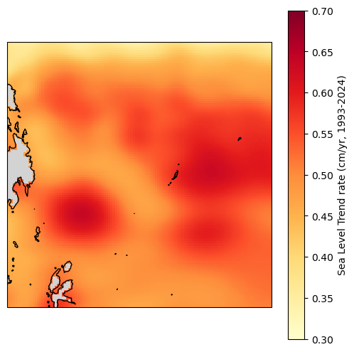
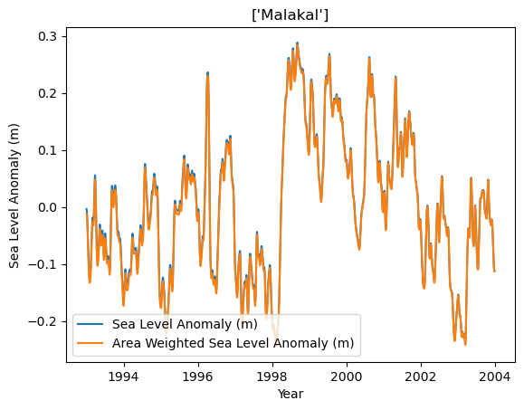
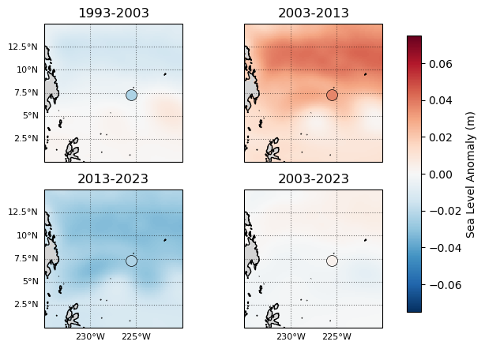
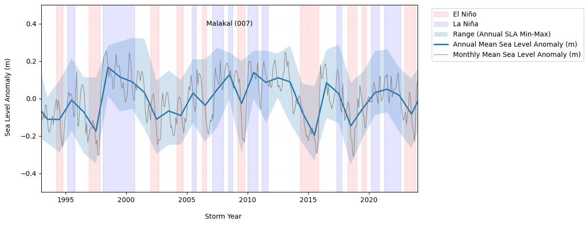
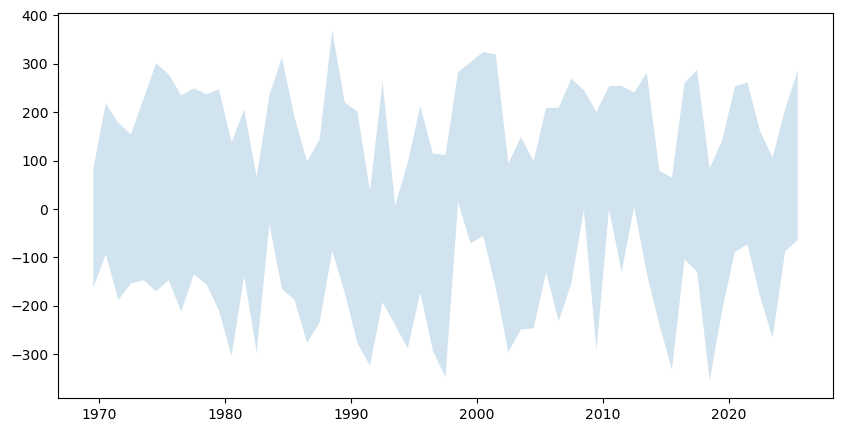

# import necessary libraries
import numpy as np
import xarray as xr
import datetime as dt
from pathlib import Path
import pandas as pd
import os
import os.path as op
import sys
# data retrieval libraries
import requests
from urllib.request import urlretrieve #used for downloading files
import json
import copernicusmarine
# data processing libraries
from scipy import stats
import seaborn as sns
import cartopy.crs as ccrs
import cartopy.feature as cfeature
import matplotlib.pyplot as plt
from myst_nb import glue #used for figure numbering when exporting to LaTeX
sys.path.append("../../../functions")
from data_downloaders import download_oni_index, download_uhslc_data
---------------------------------------------------------------------------
ModuleNotFoundError Traceback (most recent call last)
Cell In[1], line 27
24 from myst_nb import glue #used for figure numbering when exporting to LaTeX
26 sys.path.append("../../../functions")
---> 27 from data_downloaders import download_oni_index, download_uhslc_data
ModuleNotFoundError: No module named 'data_downloaders'
data_dir = Path('../../../data')
path_figs = "../../../matrix_cc/figures"
data_dir = Path(data_dir,'sea_level')
output_dir = data_dir
# Create the output directory if it does not exist
output_dir.mkdir(exist_ok=True)
data_dir.mkdir(exist_ok=True)
uhslc_id = 7
# download the hourly data
rsl = download_uhslc_data(data_dir, uhslc_id, frequency='daily')
def get_MHHW_uhslc_datums(id, datumname):
url = 'https://uhslc.soest.hawaii.edu/stations/TIDES_DATUMS/fd/LST/fd'+f'{int(id):03}'+'/datumTable_'+f'{int(id):03}'+'_mm_GMT.csv'
datumtable = pd.read_csv(url)
datum = datumtable[datumtable['Name'] == datumname]['Value'].values[0]
# ensure datum is a float
datum = float(datum)
return datum, datumtable
rsl
<xarray.Dataset> Size: 249kB
Dimensions: (record_id: 1, time: 20712)
Coordinates:
* time (time) datetime64[ns] 166kB 1969-05-19T12:00:00 ......
* record_id (record_id) int64 8B 7
Data variables:
sea_level (record_id, time) float32 83kB ...
lat (record_id) float32 4B ...
lon (record_id) float32 4B ...
station_name (record_id) <U7 28B 'Malakal'
station_country (record_id) <U5 20B 'Palau'
station_country_code (record_id) float32 4B ...
uhslc_id (record_id) int16 2B ...
gloss_id (record_id) float32 4B ...
ssc_id (record_id) |S4 4B ...
last_rq_date (record_id) datetime64[ns] 8B ...
Attributes:
title: UHSLC Fast Delivery Tide Gauge Data (daily)
ncei_template_version: NCEI_NetCDF_TimeSeries_Orthogonal_Template_v2.0
featureType: timeSeries
Conventions: CF-1.6, ACDD-1.3
date_created: 2026-03-10T14:26:52Z
publisher_name: University of Hawaii Sea Level Center (UHSLC)
publisher_email: philiprt@hawaii.edu, markm@soest.hawaii.edu
publisher_url: http://uhslc.soest.hawaii.edu
summary: The UHSLC assembles and distributes the Fast Deli...
processing_level: Fast Delivery (FD) data undergo a level 1 quality...
acknowledgment: The UHSLC Fast Delivery database is supported by ...# extract the given datum from the dataframe
datumname = 'MSL'
datum, datumtable = get_MHHW_uhslc_datums(uhslc_id, datumname)
rsl['datum'] = datum # already in mm
rsl['sea_level_msl'] = rsl['sea_level'] - rsl['datum']
# assign units to datum and sea level
rsl['datum'].attrs['units'] = 'mm'
rsl['sea_level_msl'].attrs['units'] = 'mm'
# calculate altimetry epoch mean for later use
epoch_daily_mean = rsl['sea_level_msl'].sel(time=slice('1993-01-01', '2012-12-31')).mean()
Show code cell source
def process_trend_with_nan(data,var):
# Remove NaN values
data = data[var].dropna(dim='time')
# Convert time to numerical values (ordinal format)
time = data['time']
time_num = time.astype('datetime64[D]').astype(float) # Convert to days since epoch
# Fit a trendline (degree 1 polynomial)
data = data[0].values
coefficients = np.polyfit(time_num, data, 1) # Linear fit
trendline = np.poly1d(coefficients) # Create trendline function
return coefficients, trendline, coefficients[0] * 365.25 # Return the slope as mm/year
coefficients, trend_fxn, trend_rate = process_trend_with_nan(rsl,'sea_level_msl')
sea_level_trend = trend_fxn(rsl['time'].astype('datetime64[D]').astype(float))
rsl['sea_level_anomaly_detrended'] = rsl['sea_level_msl'] - sea_level_trend
/var/folders/88/z9xxhn052qddjc_ppp2j_8gr0000gn/T/ipykernel_25004/4268275979.py:7: UserWarning: Converting non-nanosecond precision datetime values to nanosecond precision. This behavior can eventually be relaxed in xarray, as it is an artifact from pandas which is now beginning to support non-nanosecond precision values. This warning is caused by passing non-nanosecond np.datetime64 or np.timedelta64 values to the DataArray or Variable constructor; it can be silenced by converting the values to nanosecond precision ahead of time.
time_num = time.astype('datetime64[D]').astype(float) # Convert to days since epoch
/var/folders/88/z9xxhn052qddjc_ppp2j_8gr0000gn/T/ipykernel_25004/776025258.py:3: UserWarning: Converting non-nanosecond precision datetime values to nanosecond precision. This behavior can eventually be relaxed in xarray, as it is an artifact from pandas which is now beginning to support non-nanosecond precision values. This warning is caused by passing non-nanosecond np.datetime64 or np.timedelta64 values to the DataArray or Variable constructor; it can be silenced by converting the values to nanosecond precision ahead of time.
sea_level_trend = trend_fxn(rsl['time'].astype('datetime64[D]').astype(float))
# resample to monthly time series
rsl_monthly = rsl.resample(time='1MS',label='left').mean()
# get climatology (annual cycle) by grouping by month
rsl_climatology = rsl_monthly.groupby('time.month').mean('time')
# get anomalies by subtracting climatology from monthly data
rsl_anomalies = rsl_monthly.groupby('time.month') - rsl_climatology
rsl_anomalies
<xarray.Dataset> Size: 46kB
Dimensions: (record_id: 1, time: 681)
Coordinates:
* record_id (record_id) int64 8B 7
* time (time) datetime64[ns] 5kB 1969-05-01 ... 202...
month (time) int64 5kB 5 6 7 8 9 10 ... 9 10 11 12 1
Data variables:
sea_level (time, record_id) float32 3kB -74.49 ... 141.2
lat (time, record_id) float32 3kB -4.768e-07 ......
lon (time, record_id) float32 3kB 0.0 0.0 ... 0.0
station_country_code (time, record_id) float32 3kB 0.0 0.0 ... 0.0
uhslc_id (time, record_id) float64 5kB 0.0 0.0 ... 0.0
gloss_id (time, record_id) float32 3kB 0.0 0.0 ... 0.0
datum (time) float64 5kB 0.0 0.0 0.0 ... 0.0 0.0 0.0
sea_level_msl (time, record_id) float64 5kB -74.49 ... 141.2
sea_level_anomaly_detrended (time, record_id) float64 5kB -11.79 ... 80.51# change the index to be on storm_time instead of time
rsl_years = rsl.copy()
rsl_years['storm_time'] = rsl_years['time']
rsl_years['storm_time'] = xr.DataArray(
pd.to_datetime(rsl_years['storm_time'].values).to_series().apply(
lambda x: x if x.month >= 5 else x - pd.DateOffset(years=1)
),
dims=rsl_years['storm_time'].dims,
coords=rsl_years['storm_time'].coords
)
rsl_years = rsl_years.set_index(time='storm_time')
# # # rename the time dimension to storm_time
rsl_years = rsl_years.rename({'time':'storm_time'})
rsl_years
<xarray.Dataset> Size: 580kB
Dimensions: (record_id: 1, storm_time: 20712)
Coordinates:
* storm_time (storm_time) datetime64[ns] 166kB 1969-05-19...
* record_id (record_id) int64 8B 7
Data variables: (12/13)
sea_level (record_id, storm_time) float32 83kB ...
lat (record_id) float32 4B 7.33
lon (record_id) float32 4B 134.5
station_name (record_id) <U7 28B 'Malakal'
station_country (record_id) <U5 20B 'Palau'
station_country_code (record_id) float32 4B 585.0
... ...
gloss_id (record_id) float32 4B 120.0
ssc_id (record_id) |S4 4B b'mala'
last_rq_date (record_id) datetime64[ns] 8B 2018-12-31T12:...
datum float64 8B 1.532e+03
sea_level_msl (record_id, storm_time) float64 166kB -56.0 ...
sea_level_anomaly_detrended (record_id, storm_time) float64 166kB -11.55...
Attributes:
title: UHSLC Fast Delivery Tide Gauge Data (daily)
ncei_template_version: NCEI_NetCDF_TimeSeries_Orthogonal_Template_v2.0
featureType: timeSeries
Conventions: CF-1.6, ACDD-1.3
date_created: 2026-03-10T14:26:52Z
publisher_name: University of Hawaii Sea Level Center (UHSLC)
publisher_email: philiprt@hawaii.edu, markm@soest.hawaii.edu
publisher_url: http://uhslc.soest.hawaii.edu
summary: The UHSLC assembles and distributes the Fast Deli...
processing_level: Fast Delivery (FD) data undergo a level 1 quality...
acknowledgment: The UHSLC Fast Delivery database is supported by ...# reorder to that storm_time is monotonicly increasing
rsl_subset = rsl_years.sortby('storm_time')
# Group by storm_year and record_id
rsl_yearly_mean = rsl_years.groupby('storm_time.year').mean('storm_time')
# give year dimension a name
rsl_yearly_mean = rsl_yearly_mean.rename({'year':'storm_year'})
rsl_yearly_mean
<xarray.Dataset> Size: 7kB
Dimensions: (storm_year: 57, record_id: 1)
Coordinates:
* record_id (record_id) int64 8B 7
* storm_year (storm_year) int64 456B 1969 1970 ... 2024 2025
Data variables: (12/13)
sea_level (storm_year, record_id) float32 228B 1.454e+...
lat (storm_year, record_id) float32 228B 7.33 .....
lon (storm_year, record_id) float32 228B 134.5 ....
station_name (storm_year, record_id) <U7 2kB 'Malakal' .....
station_country (storm_year, record_id) <U5 1kB 'Palau' ... ...
station_country_code (storm_year, record_id) float32 228B 585.0 ....
... ...
gloss_id (storm_year, record_id) float32 228B 120.0 ....
ssc_id (storm_year, record_id) |S4 228B b'mala' ......
last_rq_date (storm_year, record_id) datetime64[ns] 456B ...
datum (storm_year) float64 456B 1.532e+03 ... 1.53...
sea_level_msl (storm_year, record_id) float64 456B -77.87 ...
sea_level_anomaly_detrended (storm_year, record_id) float64 456B -34.55 ...
Attributes:
title: UHSLC Fast Delivery Tide Gauge Data (daily)
ncei_template_version: NCEI_NetCDF_TimeSeries_Orthogonal_Template_v2.0
featureType: timeSeries
Conventions: CF-1.6, ACDD-1.3
date_created: 2026-03-10T14:26:52Z
publisher_name: University of Hawaii Sea Level Center (UHSLC)
publisher_email: philiprt@hawaii.edu, markm@soest.hawaii.edu
publisher_url: http://uhslc.soest.hawaii.edu
summary: The UHSLC assembles and distributes the Fast Deli...
processing_level: Fast Delivery (FD) data undergo a level 1 quality...
acknowledgment: The UHSLC Fast Delivery database is supported by ...Show code cell source
def get_CMEMS_data(data_dir):
maxlat = 15
minlat = 0
minlon = 125
maxlon = 140
start_date_str = "1993-01-01T00:00:00"
end_date_str = "2025-04-30T23:59:59"
data_dir = data_dir
"""
Retrieves Copernicus Marine data for a specified region and time period.
Args:
minlon (float): Minimum longitude of the region.
maxlon (float): Maximum longitude of the region.
minlat (float): Minimum latitude of the region.
maxlat (float): Maximum latitude of the region.
start_date_str (str): Start date of the data in ISO 8601 format.
end_date_str (str): End date of the data in ISO 8601 format.
data_dir (str): Directory to save the retrieved data.
Returns:
str: The filename of the retrieved data.
"""
copernicusmarine.subset(
dataset_id="cmems_obs-sl_glo_phy-ssh_my_allsat-l4-duacs-0.125deg_P1D",
variables=["adt", "sla"],
minimum_longitude=minlon,
maximum_longitude=maxlon,
minimum_latitude=minlat,
maximum_latitude=maxlat,
start_datetime=start_date_str,
end_datetime=end_date_str,
output_directory=data_dir,
output_filename="cmems_L4_SSH_0.125deg_" + start_date_str[0:4] + "_" + end_date_str[0:4] + ".nc"
)
fname_cmems = 'cmems_L4_SSH_0.125deg_1993_2025.nc'
# check if the file exists, if not, download it
if not os.path.exists(data_dir / fname_cmems):
print('You will need to download the CMEMS data in a separate script')
# get_CMEMS_data(data_dir) #<<--- COMMENT OUT TO AVOID ACCIDENTAL DATA DOWNLOADS.
else:
print('CMEMS data already downloaded, good to go!')
# open the CMEMS data
cmems = xr.open_dataset(data_dir / fname_cmems, engine="h5netcdf", chunks="auto")
# slice the data to time 1993-01-01 to 2022-12-31
start_date = '1993-01-01'
end_date = '2022-12-31'
cmems = cmems.sel(time=slice(start_date, end_date))
epoch_daily_mean_cmems = cmems['sla'].sel(time=slice(start_date, '2012-12-31')).mean()
# put cmems data into the same MSL (NTDE) reference frame
cmems['sla'] = cmems['sla'] - epoch_daily_mean_cmems - epoch_daily_mean
CMEMS data already downloaded, good to go!
Show code cell source
# def process_trend_with_nan(sea_level_anomaly):
# # Flatten the data and get a time index
# # first ensure time is the first dimension regardless of other dimensions
# sea_level_anomaly = sea_level_anomaly.transpose('time', ...)
# sla_flat = sea_level_anomaly.values.reshape(sea_level_anomaly.shape[0], -1)
# time_index = pd.to_datetime(sea_level_anomaly.time.values).to_julian_date()
# detrended_flat = np.full_like(sla_flat, fill_value=np.nan)
# detrended_flat_err = np.full_like(sla_flat, fill_value=np.nan)
# trend_rates = np.full(sla_flat.shape[1], np.nan)
# trend_errors = np.full(sla_flat.shape[1], np.nan)
# p_values = np.full(sla_flat.shape[1], np.nan)
# # Loop over each grid point
# for i in range(sla_flat.shape[1]):
# # Get the time series for this grid point
# y = sla_flat[:,i]
# mask = ~np.isnan(y)
# if np.any(mask):
# time_masked = time_index[mask]
# y_masked = y[mask]
# slope, intercept, _, p_value, std_error = stats.linregress(time_masked, y_masked)
# trend = slope * time_index + intercept
# detrended_flat[:,i] = y - trend
# trend_rates[i] = slope
# trend_errors[i] = std_error
# p_values[i] = p_value
# detrended = detrended_flat.reshape(sea_level_anomaly.shape)
# trend_errors_reshaped = trend_errors.reshape(sea_level_anomaly.shape[1:])
# # Calculate trend magnitude
# sea_level_trend = sea_level_anomaly - detrended
# trend_mag = sea_level_trend[-1] - sea_level_trend[0]
# times = pd.to_datetime(sea_level_anomaly['time'].values)
# time_mag = (times[-1] - times[0]).days/365.25 # in years
# trend_rate = trend_mag / time_mag
# trend_err = trend_errors_reshaped / time_mag
# return trend_mag, sea_level_trend, trend_rate, np.nanmean(p_value) , np.nanmean(trend_err)
Show code cell source
import xarray as xr
import numpy as np
import pandas as pd
def process_trend_with_nan(sea_level_anomaly):
sea_level_anomaly = sea_level_anomaly.transpose("time", ...)
# Convert time to numeric years
t = pd.to_datetime(sea_level_anomaly.time.values)
t_years = (t - t[0]).days / 365.25
t_years = xr.DataArray(t_years, dims="time", coords={"time": sea_level_anomaly.time})
# Remove mean from time
t_centered = t_years - t_years.mean(dim="time")
# Remove mean from data
y_centered = sea_level_anomaly - sea_level_anomaly.mean(dim="time")
# Compute slope
slope = (t_centered * y_centered).sum(dim="time") / (t_centered**2).sum(dim="time")
# Intercept
intercept = sea_level_anomaly.mean(dim="time") - slope * t_years.mean()
# Trend line
sea_level_trend = slope * t_years + intercept
# Trend magnitude
trend_mag = sea_level_trend.isel(time=-1) - sea_level_trend.isel(time=0)
# Time span
time_mag = t_years[-1] - t_years[0]
trend_rate = trend_mag / time_mag
# Simple residual-based error estimate
residuals = sea_level_anomaly - sea_level_trend
n = sea_level_anomaly.count(dim="time")
trend_err = np.sqrt((residuals**2).sum(dim="time") / (n - 2)) / time_mag
p_value = xr.full_like(trend_rate, np.nan)
return trend_mag, sea_level_trend, trend_rate, p_value, trend_err
# concentrating on decadal trends
# let's look at 1993-2003 and 2003-2013
trend_mag_cmems, trend_line_cmems, trend_rate_cmems, p_value_cmems, trend_err_cmems = process_trend_with_nan(cmems['sla'])
Show code cell source
def plot_map(vmin, vmax, xlims, ylims):
"""
Plot a map of the magnitude of sea level change.
Parameters:
vmin (float): Minimum value for the color scale.
vmax (float): Maximum value for the color scale.
xlims (tuple): Tuple of min and max values for the x-axis limits.
ylims (tuple): Tuple of min and max values for the y-axis limits.
Returns:
fig (matplotlib.figure.Figure): The matplotlib figure object.
ax (matplotlib.axes._subplots.AxesSubplot): The matplotlib axes object.
crs (cartopy.crs.Projection): The cartopy projection object.
cmap (matplotlib.colors.Colormap): The colormap used for the plot.
"""
crs = ccrs.PlateCarree()
fig, ax = plt.subplots(figsize=(6, 6), subplot_kw={'projection': crs})
ax.set_xlim(xlims)
ax.set_ylim(ylims)
palette = sns.color_palette("mako_r", as_cmap=True)
cmap = palette
ax.coastlines()
ax.add_feature(cfeature.LAND, color='lightgrey')
return fig, ax, crs, cmap
import warnings # import warnings to suppress warnings in cartopy
# Ignore the specific shapely warning for this cell
warnings.filterwarnings("ignore", category=RuntimeWarning, message="invalid value encountered in create_collection")
# define vmin and vmax variables
vmin = 0.3
vmax = 0.7
# Use float values for map extent to avoid dtype issues and ensure gridlines appear
xlims = [float(cmems.longitude.min()), float(cmems.longitude.max())]
ylims = [float(cmems.latitude.min()), float(cmems.latitude.max())]
trend_rate_cm = trend_rate_cmems * 100 # convert to cm/yr
# make ax,fig
crs = ccrs.PlateCarree()
fig, ax, crs, cmap = plot_map(vmin,vmax,xlims,ylims)
cmap = 'YlOrRd'
trend_rate_cm.plot(ax=ax, transform=crs,
vmin=vmin, vmax=vmax, cmap=cmap, add_colorbar=True,
cbar_kwargs={'label': 'Sea Level Trend rate (cm/yr, 1993-2024)'}
)
# save the figure
# plt.savefig(output_dir / '1.2_cmems_trend_rate_1993_2024.png', dpi=300, bbox_inches='tight')
<cartopy.mpl.geocollection.GeoQuadMesh at 0x17d96cce0>

startYear = '1993'
endYear = '2024'
# First, compute the area-weighted mean time series
weights = np.cos(np.deg2rad(cmems.latitude))
weights.name = "weights"
sla_weighted = cmems['sla'].sel(time=slice(startYear,endYear)).weighted(weights)
sla_regional_mean = sla_weighted.mean(dim=('latitude', 'longitude'))
trend_mag, trend_line, trend_rate, p_value, trend_err = process_trend_with_nan(sla_regional_mean)
trend_rate_computed = trend_rate.compute()
print(f'The trend rate for {startYear}-{endYear} in the entire grid is {trend_rate_computed*100:.2f} cm/yr')
The trend rate for 1993-2024 in the entire grid is 0.51 cm/yr
# concentrating on decadal trends
# let's look at 1993-2003 and 2003-2013
cmems1993_2003 = cmems.sel(time=slice('1993','2003'))
# get the overall trend (full time series)
trend_mag, sea_level_trend, trend_rate,p_value, trend_err = process_trend_with_nan(cmems['sla'])
sla_weighted = cmems['sla'].weighted(weights)
sla_regional_mean = sla_weighted.mean(dim=('latitude', 'longitude'))
trend_mag_area_weighted, sea_level_trend_area_weighted, trend_rate_area_weighted, p_value_area_weighted, trend_err_area_weighted = process_trend_with_nan(sla_regional_mean)
#remove the trend from the data
sla_detrended = cmems1993_2003['sla'] - sea_level_trend.sel(time=slice('1993','2003'))
sla_detrended_area_weighted = cmems1993_2003['sla'] - sea_level_trend_area_weighted
lat = rsl.lat
lon = rsl.lon
sla_detrended.sel(latitude=lat, longitude=lon, method='nearest').plot(label='Sea Level Anomaly (m)')
sla_detrended_area_weighted.sel(latitude=lat, longitude=lon, method='nearest').plot(label='Area Weighted Sea Level Anomaly (m)')
# change the title to station name
plt.title(rsl['station_name'].values)
#add axis labels
plt.xlabel('Year')
plt.ylabel('Sea Level Anomaly (m)')
plt.legend()
<matplotlib.legend.Legend at 0x17d789580>

# concentrating on decadal trends
# let's look at 1993-2003 and 2003-2013
yr_start = [1993,2003,2013,2003]
yr_stop = [2003,2013,2023,2023]
#do storm year instead of calendar year
yr_start_str = [str(int(yr))+'-05-01' for yr in yr_start]
yr_stop_str = [str(int(yr+1))+'-04-30' for yr in yr_stop]
trend_mag, sea_level_trend, trend_rate,p_value, trend_err = process_trend_with_nan(cmems['sla'].sel(time=slice(yr_start_str[0],yr_stop_str[-1])))
#remove the trend from the data
sla_detrended = cmems['sla'] - sea_level_trend
rsl_anomalies
<xarray.Dataset> Size: 46kB
Dimensions: (record_id: 1, time: 681)
Coordinates:
* record_id (record_id) int64 8B 7
* time (time) datetime64[ns] 5kB 1969-05-01 ... 202...
month (time) int64 5kB 5 6 7 8 9 10 ... 9 10 11 12 1
Data variables:
sea_level (time, record_id) float32 3kB -74.49 ... 141.2
lat (time, record_id) float32 3kB -4.768e-07 ......
lon (time, record_id) float32 3kB 0.0 0.0 ... 0.0
station_country_code (time, record_id) float32 3kB 0.0 0.0 ... 0.0
uhslc_id (time, record_id) float64 5kB 0.0 0.0 ... 0.0
gloss_id (time, record_id) float32 3kB 0.0 0.0 ... 0.0
datum (time) float64 5kB 0.0 0.0 0.0 ... 0.0 0.0 0.0
sea_level_msl (time, record_id) float64 5kB -74.49 ... 141.2
sea_level_anomaly_detrended (time, record_id) float64 5kB -11.79 ... 80.51# make 4 subplots for each year range
from matplotlib.ticker import FuncFormatter
def pacific_all_west_formatter(x, pos=None):
# Convert to [0, 360)
x = (x + 360) % 360
deg_west = (180 - x) % 360
if deg_west == 0:
return "180°W"
else:
return f"{abs(deg_west):.0f}°W"
crs_main = ccrs.PlateCarree(central_longitude=180)
crs_sub = ccrs.PlateCarree()
fig, ax = plt.subplots(2,2,figsize=(6, 5), subplot_kw={'projection': crs_main})
# Variable to hold the colorbar handle
cbar_ax = fig.add_axes([0.92, 0.15, 0.03, 0.7]) # Adjust these values to fit your layout
fig.subplots_adjust(right=0.9) # Make space for the colorbar
vmin = -0.075
vmax = 0.075
# Loop through each period
for i, ax in enumerate(ax.flat):
# Select the data for the current period and calculate the mean over time
sla_mean = sla_detrended.sel(time=slice(yr_start_str[i],yr_stop_str[i])).mean(dim='time',skipna=True)
# sla_mean = sla_mean - sea_level_trend.sel(time=slice(str(yr_start[i]), str(yr_stop[i]))).mean(dim='time')
#subtract the
# Plot the mean sea level anomaly
c = sla_mean.plot(ax=ax, add_colorbar=False, transform=crs_sub, cmap='RdBu_r')
# Set the title to the current period
ax.set_title(f'{yr_start[i]}-{yr_stop[i]}')
# Add coastlines and land
palette = sns.color_palette("RdBu_r", as_cmap=True)
cmap = palette
ax.add_feature(cfeature.COASTLINE)
ax.add_feature(cfeature.LAND, color='lightgrey')
# Optionally, adjust color limits for consistency across plots
c.set_clim(vmin,vmax)
ax.scatter(rsl['lon'], rsl['lat'], transform=crs_sub, s=50,
c='white', linewidth=0.5, edgecolor='black',zorder=10)
ax.scatter(rsl['lon'], rsl['lat'], transform=crs_sub, s=100,
c=rsl_anomalies.sel(time=slice(yr_start_str[i],yr_stop_str[i])).sea_level_anomaly_detrended.mean(dim="time")/1000, vmin=vmin, vmax=vmax, cmap=cmap,
linewidth=0.5, edgecolor='black',zorder=10)
#add grid
gl = ax.gridlines(crs=crs_main, draw_labels=False, linestyle=':', color='black',
alpha=0.5,xlocs=ax.get_xticks(),ylocs=ax.get_yticks())
gl.xformatter = FuncFormatter(pacific_all_west_formatter)
if i>1:
gl.bottom_labels = True
if i==0:
gl.left_labels = True
if i==2:
gl.left_labels = True
#make all labels tiny
gl.xlabel_style = {'size': 8}
gl.ylabel_style = {'size': 8}
# Add the colorbar
cbar = fig.colorbar(c, cax=cbar_ax)
cbar.set_label('Sea Level Anomaly (m)')
glue("SL_YMA_decadal",fig,display=False)
plt.savefig(output_dir / '1.2_2_SL_anomaly_annual_map_decadal.png', dpi=300, bbox_inches='tight')
Show code cell output

Show code cell source
def plot_TG_rsl_anomaly_annual(rid, fig, ax, rsl_yearly_mean, rsl_subset, rsl_anomalies,oni, oniPlot=False):
ax.set_xlim(1993,2024)
ax.set_ylim(-0.5, 0.5)
ax.grid(alpha=0.2, color='lightgray')
if oniPlot:
ymin, ymax = ax.get_ylim()
# Shading El Niño events
ax.fill_between(oni.index, ymin,ymax,
where=oni['El Nino'] == 1, color='red', alpha=0.1, label='El Niño')
# Shading La Niña events
ax.fill_between(oni.index, ymin,ymax,
where=oni['La Nina'] == 1, color='blue', alpha=0.1, label='La Niña')
# get min and max for each year
rsl_yearly_min = rsl_subset.groupby('storm_time.year').min('storm_time').isel(record_id=rid)
rsl_yearly_max = rsl_subset.groupby('storm_time.year').max('storm_time').isel(record_id=rid)
rsl_yearly_min = rsl_yearly_min['sea_level_anomaly_detrended']/1000
rsl_yearly_max = rsl_yearly_max['sea_level_anomaly_detrended']/1000
#make a fill from max to min for each month
ax.fill_between(rsl_yearly_mean.storm_year+0.5,
rsl_yearly_min, rsl_yearly_max,
alpha=0.2, label='Range (Annual SLA Min-Max)')
ax.plot(rsl_yearly_mean.storm_year+0.5,
0.001*rsl_yearly_mean['sea_level_anomaly_detrended'].isel(record_id=rid),
label='Annual Mean Sea Level Anomaly (m)',alpha=1,linewidth=2)
# convert rsl_monthly['time'] to float
storm_time_float = rsl_monthly['time.year'] + (rsl_monthly['time.month']-5)/12 #subtract 5 months to go with 'storm year' convention (May-April)
ax.plot(storm_time_float,
0.001*rsl_monthly['sea_level_anomaly_detrended'].isel(record_id=rid),
label='Monthly Mean Sea Level Anomaly (m)',alpha=1, color='gray',linewidth=0.75)
ax.set_ylabel(''), ax.set_xlabel('')
# add rsl_yearly_mean['station_name'].isel(record_id=rid).values to upper center of plot
nameID = str(rsl_subset['station_name'].isel(record_id=rid).values) + ' (' + str(rsl_subset['record_id'].isel(record_id=rid).values).zfill(3) + ')'
ax.text(0.5, 0.9, nameID, horizontalalignment='center', verticalalignment='center', transform=ax.transAxes)
Show code cell source
def detect_enso_events(oni_df):
"""
Detects El Niño and La Niña events within a storm year based on the ONI index.
An El Niño event is defined as having 5 consecutive months with ONI > 0.5.
A La Niña event is defined as having 5 consecutive months with ONI < -0.5.
Parameters:
oni_df (pd.DataFrame): DataFrame containing the ONI index with a datetime index.
Returns:
pd.DataFrame: DataFrame with ENSO mode classification.
"""
oni_df['ONI Mode'] = 'Neutral'
oni_df['year_storm'] = oni_df.index.year
oni_df.loc[oni_df.index.month < 5, 'year_storm'] -= 1
# El Nino: mark a month as El Nino if it's part of any 5-month period where all months exceed 0.5
el_nino_rolling = (oni_df['ONI'] > 0.5).rolling(window=5, min_periods=5).sum() == 5
# Expand to mark all months within the 5-month window
oni_df['El Nino'] = False
for i in range(len(oni_df)):
if el_nino_rolling.iloc[i]:
# Mark current month and previous 4 months
start_idx = max(0, i - 4)
oni_df.iloc[start_idx:i+1, oni_df.columns.get_loc('El Nino')] = True
# La Nina: mark a month as La Nina if it's part of any 5-month period where all months are below -0.5
la_nina_rolling = (oni_df['ONI'] < -0.5).rolling(window=5, min_periods=5).sum() == 5
# Expand to mark all months within the 5-month window
oni_df['La Nina'] = False
for i in range(len(oni_df)):
if la_nina_rolling.iloc[i]:
# Mark current month and previous 4 months
start_idx = max(0, i - 4)
oni_df.iloc[start_idx:i+1, oni_df.columns.get_loc('La Nina')] = True
# Set ONI Mode based on results
oni_df.loc[oni_df['La Nina'] == True, 'ONI Mode'] = 'La Nina'
oni_df.loc[oni_df['El Nino'] == True, 'ONI Mode'] = 'El Nino'
return oni_df
fig,ax = plt.subplots(figsize=(10,5))
# add ENSO to the plots
# import oni.csv
p_data = 'https://psl.noaa.gov/data/correlation/oni.data'
oni = download_oni_index(p_data)
#adjust the index to be float value of fractional year (storm year)
enso_events = detect_enso_events(oni)
enso_events.index = pd.to_datetime(enso_events.index )
enso_events.index = enso_events.index.year + (enso_events.index.month - 1)/12 -5/12
sid = 0
plot_TG_rsl_anomaly_annual(sid, fig, ax, rsl_yearly_mean, rsl_years, rsl_anomalies,enso_events,oniPlot=True)
ax.legend(loc='upper right', ncol=1, bbox_to_anchor=(1.45, 1.0))
# # Save the plot to a file
# filename = 'sea_level_MMA_annual_' + str(rsl_yearly_mean['station_name'].isel(record_id=sid).values) + '.png'
# plt.savefig(output_dir / filename, dpi=300, bbox_inches='tight')
fig.text(0.05, 0.5, 'Sea Level Anomaly (m)', va='center', rotation='vertical')
fig.text(0.5, 0, 'Storm Year', ha='center')
glue('SL_MMA_annual_station',fig,display=False)
station = str(rsl['station_name'].isel(record_id=sid).values)
glue('station',station,display=False)
Show code cell output

p_data = 'https://psl.noaa.gov/data/correlation/oni.data'
oni = download_oni_index(p_data)
enso_events = detect_enso_events(oni)
enso_events
| ONI | ONI Mode | year_storm | El Nino | La Nina | |
|---|---|---|---|---|---|
| 1951-01-01 | -0.82 | Neutral | 1950 | False | False |
| 1951-02-01 | -0.54 | Neutral | 1950 | False | False |
| 1951-03-01 | -0.17 | Neutral | 1950 | False | False |
| 1951-04-01 | 0.18 | Neutral | 1950 | False | False |
| 1951-05-01 | 0.36 | Neutral | 1951 | False | False |
| ... | ... | ... | ... | ... | ... |
| 2026-08-01 | NaN | Neutral | 2026 | False | False |
| 2026-09-01 | NaN | Neutral | 2026 | False | False |
| 2026-10-01 | NaN | Neutral | 2026 | False | False |
| 2026-11-01 | NaN | Neutral | 2026 | False | False |
| 2026-12-01 | NaN | Neutral | 2026 | False | False |
912 rows × 5 columns
rsl_yearly_min = rsl_years.groupby('storm_time.year').min('storm_time').isel(record_id=0)
rsl_yearly_max = rsl_years.groupby('storm_time.year').max('storm_time').isel(record_id=0)
rsl_yearly_min = rsl_yearly_min['sea_level_anomaly_detrended']
rsl_yearly_max = rsl_yearly_max['sea_level_anomaly_detrended']
#make a fill from max to min for each month
fig, ax = plt.subplots(figsize=(10,5))
ax.fill_between(rsl_yearly_mean.storm_year+0.5,
rsl_yearly_min, rsl_yearly_max,
alpha=0.2, label='Range (Annual SLA Min-Max)')
<matplotlib.collections.FillBetweenPolyCollection at 0x17df30950>
